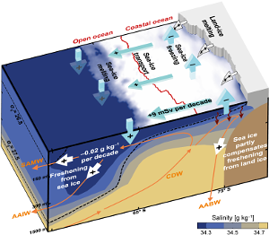
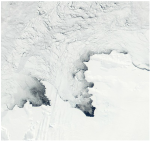

|
Welcome to my website!
I am a postdoctoral researcher studying the impact of changing sea ice, freshwater fluxes, and ocean stratification
on the ability of the Southern Ocean to take up and release carbon-dioxide and heat. Gaining a robust understanding of these processes and the related
uncertainties is directly relevant to constraining future global climate change, allowable carbon-dioxide emissions for a given temperature target,
and related sea level rise.
This work is currently carried out at Princeton University
and the British Antarctic Survey
in collaboration with Prof. Dr. Jorge Sarmiento
and Prof. Dr. Michael Meredith.
|
News
July 2019:
Start of second phase of SNSF funded Postdoc fellowship on
"The role of Southern Ocean stratification in future ocean CO2 and heat uptake".
July 2019: Presenting at the 27th IUGG General Assembly 2019 on
A major shift in the Southern Ocean surface climate.
July 2019: Presenting at the
ORCHESTRA annual meeting at PML in Plymouth.
June 2019: Invited talk at the
SCAR AntClim21 workshop on 21st century projections and predictions for Antarctica and the Southern Ocean at British Antarctic Survey in Cambridge.
May 2019: Meeting of the
ISSI Team on Antarctic sea ice at the International Space Science Institute in Bern.
May 2019: Presenting at the
SOCCOM annual meeting at Princeton University.
March 2019: New publication by Hasenfratz et al. in Science on the "The residence time of Southern Ocean surface waters and the 100,000-year ice age cycle".
⤷ Perspective: The southern amplifier
⤷ Press release:
Deutsch,
English
March 2019: I am excited to join the
BAS Honorary Researcher scheme.
Dec. 2018: Presenting at the AGU Fall Meeting 2018 on
A Previously Unrecorded Anomaly in the Southern Ocean Climate System.
Dec. 2018: Visiting McGill and presenting at the departemental seminar on
Sea-ice induced Southern Ocean surface cooling in a warming climate.
Nov. 2018: New publication by Nissen et al. in Biogeosciences on the "Factors controlling coccolithophore biogeography in the Southern Ocean".
Nov. 2018: Presenting at the ESA Ocean Salinity Science Conference on
Southern Ocean freshwater sources inferred from oxygen isotope data.
June 2018:
Awarded the
Prix de Quervain for my doctoral thesis
(link to
thesis). Thank you Nicolas Gruber, Matthias Münnich, ETH Zurich, and the Swiss Committee on Polar
and High Altitude Research!
June 2018: Meeting of the
ISSI Team on Antarctic sea ice at the International Space Science Institute in Bern.
June 2018: Presenting at POLAR2018 on
Southern Ocean freshwater sources inferred from oxygen isotope data. Thanks to NSF for the travel support.
April 2018: Talking about the role of the Southern Ocean in the climate system at the
Carbon Mitigation Initiative’s 17th Annual Meeting.
April 2018: Check-out our
Southern Ocean session at EGU 2018.
March 2018: New publication by Schlosser et al. in The Cryosphere on the "Atmospheric influences on the anomalous 2016 Antarctic sea ice decay".
Feb. 2018: Presenting at OSM 2018 on
Sea-ice induced changes in Southern Ocean hydrography.
Nov. 2017:
Awarded
ETH Medal for Outstanding Doctoral theses
(link to
thesis).
Oct. 2017:
Start of new SNSF funded Postdoc fellowship on
"The role of Southern Ocean stratification in future ocean CO2 and heat uptake".
Sept. 2017:
Visiting Bern University (CEP). Seminar on
"Southern Ocean response to recent changes in surface freshwater fluxes".
May 2017:
Visiting Princeton University and GFDL/NOAA. Seminar on
"Southern Ocean response to recent changes in surface freshwater fluxes".
Apr. 2017:
Presenting at EGU 2017 on
why the Southern Ocean has been cooling over recent decades.
Feb.-Mar. 2017: Participating in ACE expedition.
⤷ ETH Zukunftsblog
(Deutsch,
English)
⤷ SRF Interview (german only)
⤷ Video Leg 3
Nov. 2016:
PhD defense on the "Southern Ocean response to recent changes in surface freshwater fluxes".
|
Sept. 2016: New publication in Nature on the "Sea-ice transport driving Southern Ocean salinity and its recent trends".
⤷ Full-access (read only) ⤷ Nature News & Views by T. Maksym ⤷ ETH News: English, Deutsch ⤷ C2SM News |

Credit: Haumann et al., Nature, doi:10.1038/nature19101.
|
{kind=link}
Feb. 2016: Presenting at OSM 2016 on "Strengthening of the Southern Ocean Carbon Sink through Recent Changes in Freshwater Forcing".
Jan. 2016: Seminar at Alfred Wegener Institute on "Causes and effects of recent changes in Southern Ocean ice-ocean freshwater fluxes".
Jan. 2016: Presenting at the workshop on "Antarctic Sea Ice Variability in the Southern Climate-Ocean System".
Sept. 2015: New publication in Science on the "The reinvigoration of the Southern Ocean carbon sink".
June 2015: Presentation at IUGG 2015 on "Cryospheric drivers of changes in Southern Ocean stratification and carbon uptake".
April 2015: Seminar at British Antarctic Survey on "Causes and effects of recent changes in Antarctic sea-ice transport".
|
Dec. 2014: New publication in GRL on the "Anthropogenic influence on recent circulation-driven Antarctic sea-ice changes".
|

Credit: Jacques Descloitres, MODIS Land Rapid Response Team, NASA/GSFC.
|
{kind=link}
Animations
Setting the Southern Ocean in motion: An illustration of the surface currents in the Southern Ocean with the high-resolution ocean model ROMS at 1/8° horizontal resolution. Credit: F. Alexander Haumann, ETH Zurich.
Air-sea difference in pCO2 over the Southern Ocean: A strong oversaturation is visible in winter along the sea-ice edge (grey) when deep carbon-rich waters mix into the surface layer. Blue: undersaturation of the surface ocean with respect to the atmosphere; red: oversaturation. Data stems from the regional ocean model ROMS-BEC that is forced with a climatological surface forcing between 1979 and 2013. Credit: F. Alexander Haumann, ETH Zurich.
Seasonal cycle of the Southern Ocean sea surface salinity: Along the sea-ice edge (grey) a strong decrease in salinity occurs seasonally when the ice melts. Blue: salinity below 34.5 g/kg; red: above 34.5 g/kg. Data stems from the regional ocean model ROMS that is forced with a climatological surface forcing between 1979 and 2013. Credit: F. Alexander Haumann, ETH Zurich.